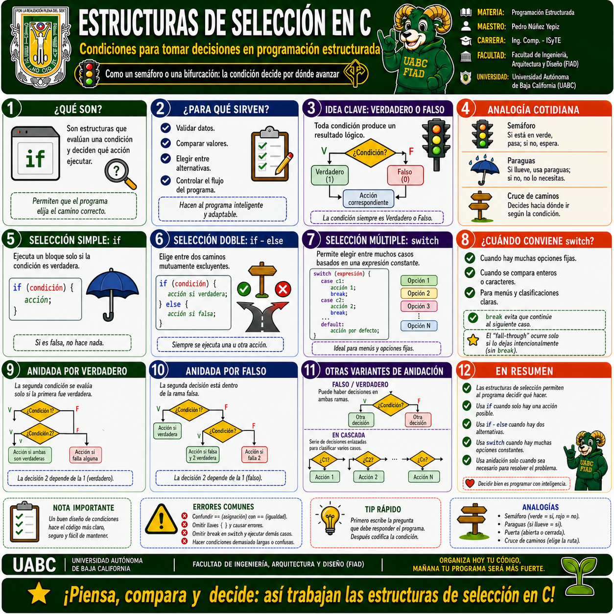
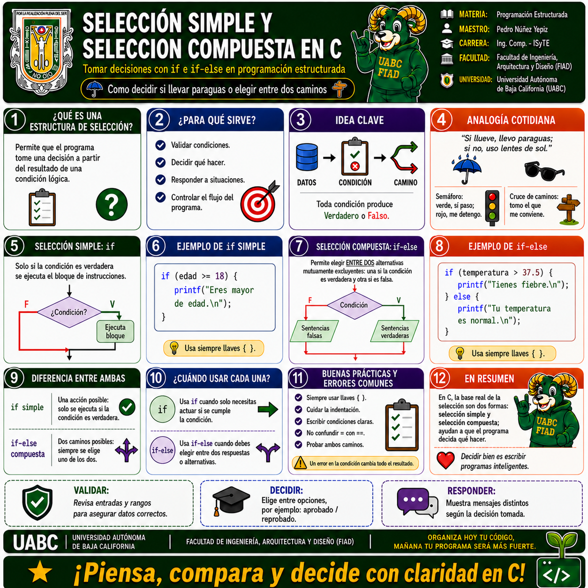
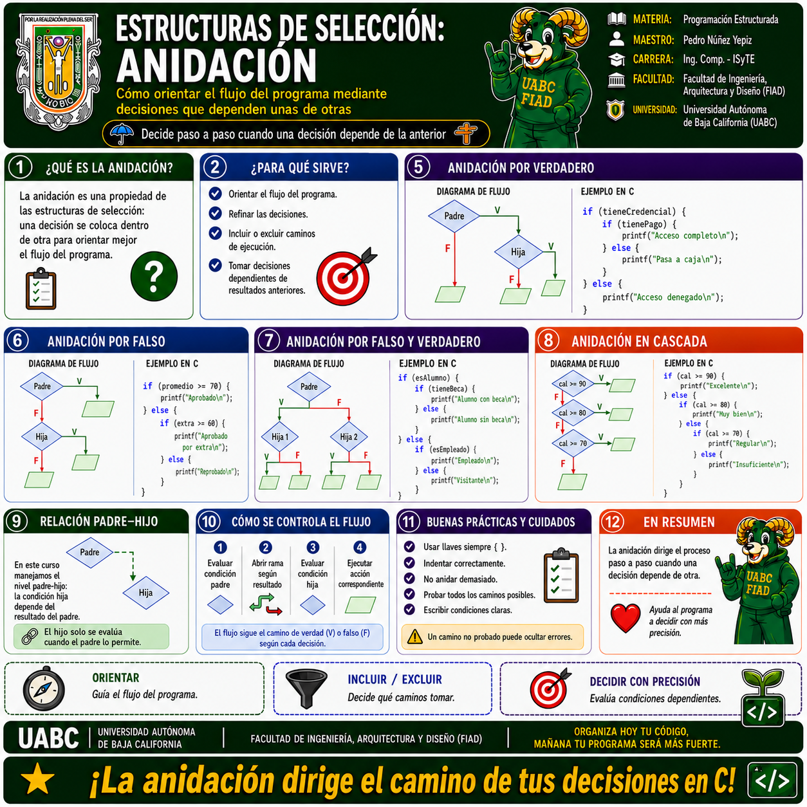
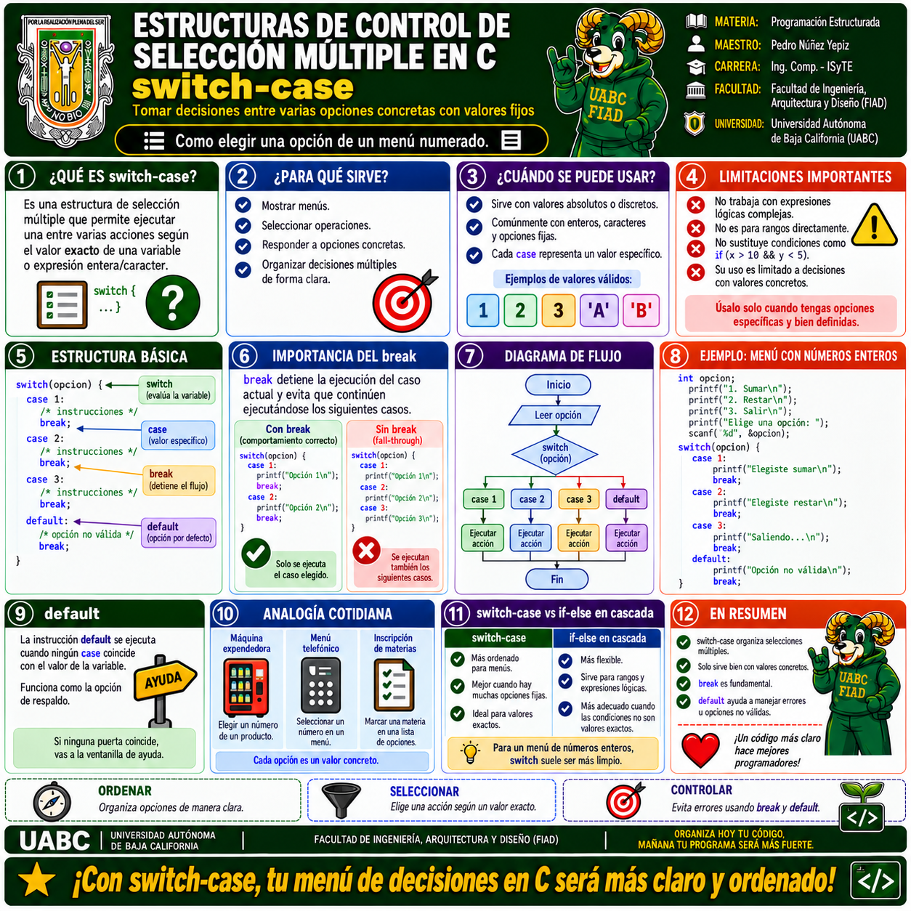

🧠 Galería visual de Estructuras de Selección
Selecciona cualquier infografía para abrirla a pantalla completa. En la vista ampliada puedes usar Zoom +, Zoom −, las flechas anterior/siguiente o la tecla Esc para cerrar.

1 · Estructuras de selección en C · Panorama general
Explica qué son las estructuras de selección, para qué sirven, la idea de verdadero o falso, analogías cotidianas, selección simple, compuesta y una introducción a la anidación y al uso de switch.

2 · Selección simple y selección compuesta
Diferencia entre if e if-else, cuándo usar cada una, ejemplos básicos, buenas prácticas, errores comunes y la lógica de decidir entre una sola acción o dos caminos posibles.

3 · Anidación en estructuras de selección
Describe la anidación como propiedad de las estructuras de selección para orientar el flujo del programa. Incluye anidación por verdadero, por falso, por falso/verdadero, en cascada y recomendaciones de uso.

4 · Control de selección múltiple · switch-case
Presenta la estructura switch-case, su sintaxis, utilidad, limitaciones, importancia de break, función de default y comparación frente a cadenas de decisiones como if anidados.
Inicia con la infografía general para comprender la lógica de las decisiones en C. Después revisa selección simple y compuesta; continúa con anidación para entender cómo se dirige el flujo paso a paso, y finaliza con switch-case para estudiar la selección múltiple con opciones fijas.